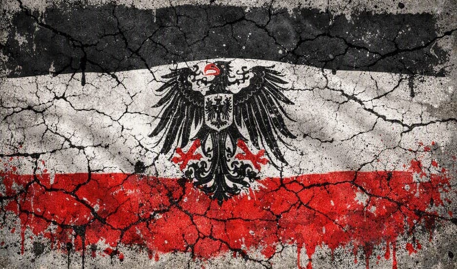
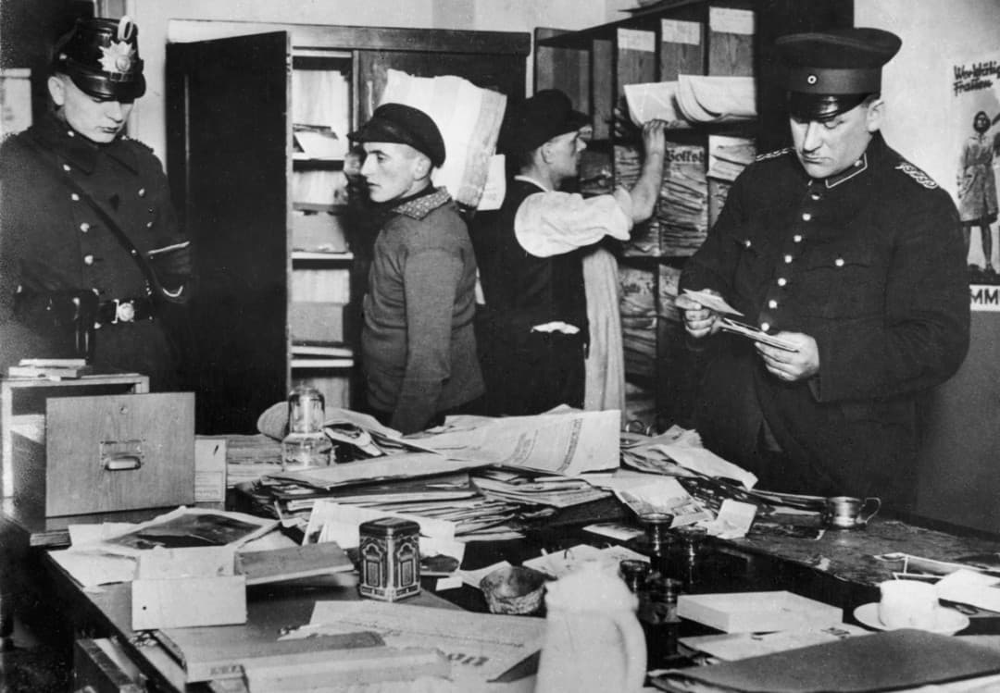
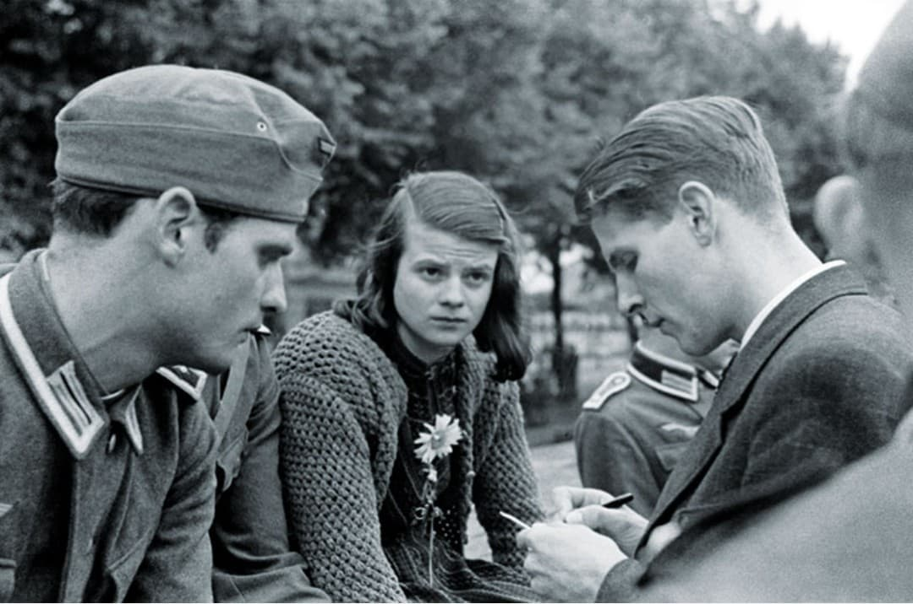
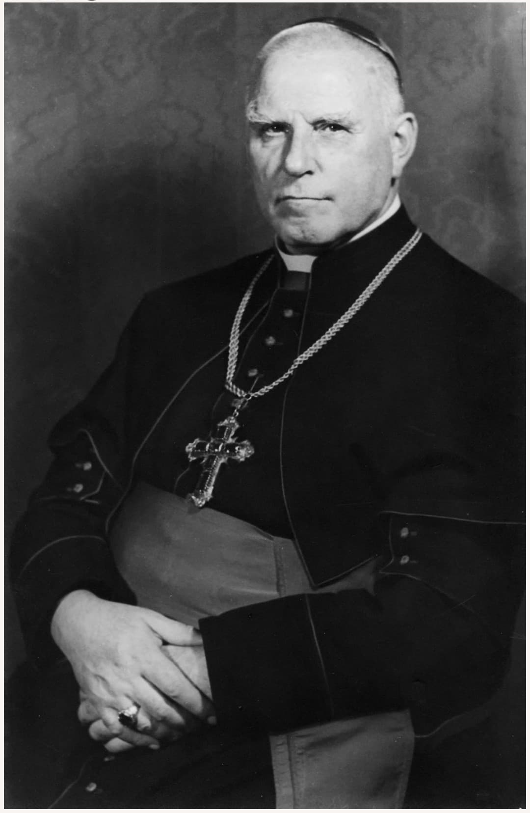

La résistance allemande regroupe les individus, groupes et réseaux qui, malgré la terreur policière et la propagande omniprésente, s’opposent au régime nazi depuis l’intérieur même de l’Allemagne. Leur action est clandestine, isolée, et extrêmement dangereuse.
Bien que minoritaire, cette résistance démontre que le nazisme n’a jamais été unanimement accepté et que des consciences ont refusé de se taire.
Le régime nazi repose sur un appareil répressif redoutable : Gestapo, SS, tribunaux d’exception, surveillance généralisée. Toute critique peut mener à l’arrestation, la torture, la déportation ou l’exécution.
Dans ce climat de peur, résister signifie souvent sacrifier sa vie, sa famille, son avenir. C’est pourtant le choix que font certains Allemands.

La Rose Blanche est un groupe étudiant non violent fondé à Munich. Sophie et Hans Scholl, Christoph Probst, Willi Graf et Kurt Huber refusent la barbarie nazie et appellent à la responsabilité individuelle dans une série de tracts clandestins.
Ils écrivent que « un peuple qui laisse faire le mal sans réagir est coupable ». Arrêtés en février 1943, jugés en quelques heures et exécutés le jour même, ils incarnent l’un des actes de courage les plus purs de la résistance allemande.
Une fiche détaillée leur est consacrée : La Rose Blanche – Résistance civile allemande .

Le complot du 20 juillet 1944 est la tentative la plus audacieuse de renverser Hitler depuis l’intérieur de la Wehrmacht. Claus von Stauffenberg dépose une bombe dans la Wolfsschanze pour mettre fin à la dictature et sauver l’Allemagne de la destruction totale.
L’attentat échoue. La répression est immédiate : des milliers d’arrestations, des centaines d’exécutions. Stauffenberg est fusillé en criant « Vive la sainte Allemagne ! ». Son geste demeure un symbole majeur de courage militaire.
Une fiche détaillée présente cette opération : Opération Walkyrie – Résistance militaire allemande .

Des figures religieuses comme Dietrich Bonhoeffer et Clemens August von Galen s’opposent au régime au nom de la foi et de la morale. Bonhoeffer refuse que l’Église se soumette au nazisme et dénonce l’euthanasie forcée (Aktion T4). Arrêté en 1943, il est exécuté en avril 1945.
Von Galen, évêque de Münster, condamne publiquement les crimes du régime, notamment l’euthanasie des handicapés. Ses sermons circulent clandestinement dans toute l’Allemagne. Hitler renonce à l’arrêter, craignant une révolte populaire.
Ces résistants spirituels incarnent la résistance de la conscience, celle qui refuse de laisser le mal devenir normal.
La résistance allemande, ce n’est pas seulement des noms célèbres. C’est aussi des ouvriers qui sabotent des machines, des professeurs qui refusent la propagande, des soldats qui protègent des civils, des familles qui écoutent la BBC en secret, des inconnus qui disent « non » quand tout le monde dit « oui ».
Ils n’ont pas de monuments, pas de statues, mais ils ont eu du courage dans un pays où le courage signifiait souvent la mort.
Bien que minoritaire, la résistance allemande prouve que le nazisme n’a jamais été unanimement accepté. Elle constitue un témoignage moral essentiel et un symbole de courage face à la dictature.
Après-guerre, ces résistants deviennent des figures de mémoire et d’exemple, rappelant que même dans les régimes les plus totalitaires, il existe toujours des consciences qui refusent de se taire.